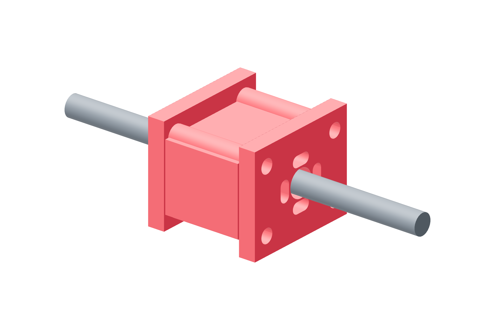

Screw drives / six copies48 / 179
Build the single driving-nut cartridge
One brass nut carries drive force through a metal face. Four metal spacers tie the two face plates together; the printed shell only locates the enclosure.
AddPer drive: 2 nut-face · 1 TR8×2 driving nut · paired-nut-spacer · 4 × 30 mm metal spacers · 4 M3 × 20 flange bolts
Tools / setup2.5 mm hex · wrenches · hand rotation

- Seat the single nut flange against its metal face and start all four M3 × 20 through-bolts.
- Thread this nut onto the screw; place the second metal face with its clear central passage in CAD order.
- Fit four 30 mm metal spacers and the 29 mm printed shell. The long face/cage ties are installed with the force link.
- Seat the flange bolts in opposite pairs. Turn the screw in both directions while restraining the cartridge by hand.
Ready when
The driving flange seats on metal and hand rotation remains continuous. No second threaded nut forces the screw against uncertain lead phasing. A binding face, wrong nut orientation or print carrying structural tie preload fails the cartridge. Correct alignment and the metal spacer path before joining its cage.